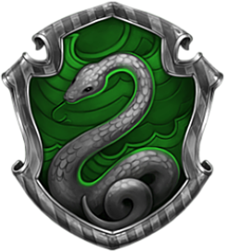

Гриффиндор
 Гриффиндор (англ. Gryffindor) — отличительные качества учеников этого факультета: храбрость, честь, благородство. Талисман — лев, цвета — красный и золотой. Декан — преподаватель трансфигурации Минерва Макгонагалл. Привидение — Почти Безголовый Ник. Основатель — Годрик Гриффиндор. Согласно Роулинг, Гриффиндор соответствует стихии огня. В переводе с французского «Гриффиндор» означает «золотой грифон». Обычно грифона характеризуют как бдительное, храброе и сильное существо. Кроме того, у кабинета профессора Дамблдора есть латунный молоток в виде грифона, чтобы стучать им в дверь. Хотя Гриффиндор считается «хорошим» факультетом, не всех гриффиндорцев можно назвать «хорошими».
Гриффиндор (англ. Gryffindor) — отличительные качества учеников этого факультета: храбрость, честь, благородство. Талисман — лев, цвета — красный и золотой. Декан — преподаватель трансфигурации Минерва Макгонагалл. Привидение — Почти Безголовый Ник. Основатель — Годрик Гриффиндор. Согласно Роулинг, Гриффиндор соответствует стихии огня. В переводе с французского «Гриффиндор» означает «золотой грифон». Обычно грифона характеризуют как бдительное, храброе и сильное существо. Кроме того, у кабинета профессора Дамблдора есть латунный молоток в виде грифона, чтобы стучать им в дверь. Хотя Гриффиндор считается «хорошим» факультетом, не всех гриффиндорцев можно назвать «хорошими».
Слизерин
Слизерин (англ. Slytherin) — ценит хитрость, честолюбие, решительность, находчивость. Книга также позволяет предположить, что для слизеринцев характерна жажда власти. Салазар Слизерин также определял учеников чаще по чистоте крови. Талисман Слизерина — змея, цвета — зелёный и серебристый. Декан — Северус Снегг, профессор зельеварения. Его предшественник, а потом и преемник на этом посту — Гораций Слизнорт, также преподававший зельеварение. Привидение — устрашающий Кровавый Барон. Согласно Джоан Роулинг, Слизерин соответствует стихии воды[23]. Спальни и гостиная Слизерина располагаются за каменной стеной в подземельях. Гостиная Слизерина — длинная низкая комната, выдержанная в стиле подземелья, находящаяся под Хогвартским Озером, освещённая зелёными лампами и обставленная резными креслами. К моменту поступления Гарри Поттера в Хогвартс Слизерин пользовался зловещей репутацией.
Пуффендуй
 Пуффендуй (англ. Hufflepuff, Хаффлпафф) — ценит трудолюбие, верность и честность (fair play). Талисман — барсук, цвета — канареечно-жёлтый и чёрный. Декан — преподаватель травологии Помона Стебль. Привидение — Толстый Монах. Основатель — Пенелопа Пуффендуй (в оригинале — Helga Hufflepuff). Согласно Роулинг, Пуффендуй соответствует стихии земли. Факультет находится в подземельях. Попасть туда можно, пройдя коридор, ведущий в кухню Хогвартса. Известно: чтобы попасть в гостиную Пуффендуя, нужно простучать определённый ритм на бочках. Если ритм неправильный, то стучащего обливает уксусом. Гостиная Пуффендуя — это очень уютная и гостеприимная комната. Множество жёлтого вокруг, глубокие кресла, небольшой туннель, ведущий в спальни, которые имеют круглые двери, как днище бочки.
Пуффендуй (англ. Hufflepuff, Хаффлпафф) — ценит трудолюбие, верность и честность (fair play). Талисман — барсук, цвета — канареечно-жёлтый и чёрный. Декан — преподаватель травологии Помона Стебль. Привидение — Толстый Монах. Основатель — Пенелопа Пуффендуй (в оригинале — Helga Hufflepuff). Согласно Роулинг, Пуффендуй соответствует стихии земли. Факультет находится в подземельях. Попасть туда можно, пройдя коридор, ведущий в кухню Хогвартса. Известно: чтобы попасть в гостиную Пуффендуя, нужно простучать определённый ритм на бочках. Если ритм неправильный, то стучащего обливает уксусом. Гостиная Пуффендуя — это очень уютная и гостеприимная комната. Множество жёлтого вокруг, глубокие кресла, небольшой туннель, ведущий в спальни, которые имеют круглые двери, как днище бочки.
Когтевран
 Когтевран (англ. Ravenclaw, Рэйвенкло, Равенкло) — ценит ум, творчество, остроумие и мудрость. Популярная когтевранская пословица гласит: «ума палата дороже злата» (англ. «wit beyond measure is man’s greatest treasure», дословно «остроумие сверх меры является величайшим сокровищем человека»)[22]. Талисман — орёл, цвета — синий и бронзовый (в фильмах заменены на синий и платиновый). Декан — профессор заклинаний Филиус Флитвик. Привидение — Серая Дама, Елена Когтевран, дочь Кандиды. Основатель — Кандида Когтевран (в оригинале — Rovena Ravenclaw). В седьмой книге упоминается, что Серая Дама при жизни была дочерью Кандиды Когтевран и носила имя Елена. Согласно Роулинг, Когтевран соответствует стихии воздуха.
Когтевран (англ. Ravenclaw, Рэйвенкло, Равенкло) — ценит ум, творчество, остроумие и мудрость. Популярная когтевранская пословица гласит: «ума палата дороже злата» (англ. «wit beyond measure is man’s greatest treasure», дословно «остроумие сверх меры является величайшим сокровищем человека»)[22]. Талисман — орёл, цвета — синий и бронзовый (в фильмах заменены на синий и платиновый). Декан — профессор заклинаний Филиус Флитвик. Привидение — Серая Дама, Елена Когтевран, дочь Кандиды. Основатель — Кандида Когтевран (в оригинале — Rovena Ravenclaw). В седьмой книге упоминается, что Серая Дама при жизни была дочерью Кандиды Когтевран и носила имя Елена. Согласно Роулинг, Когтевран соответствует стихии воздуха.